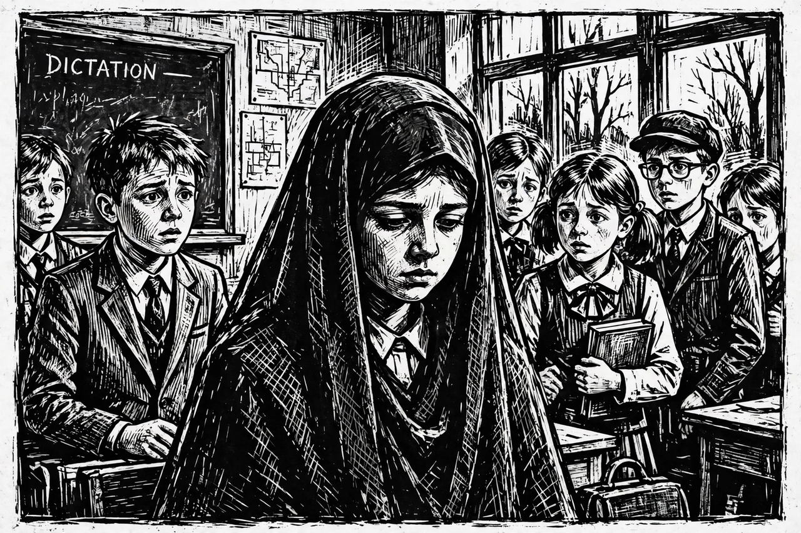

From Wikipedia, the free encyclopedia
| Persepolis | |
 | |
| Author | Marjane Satrapi |
|---|---|
| Publisher | L'Association (France); Pantheon Books (US) |
| Published | 2000–2003 (four volumes) |
| Genre | Autobiographical graphic novel |
Persepolis is an autobiographical series of bandes dessinées (French comics) by Marjane Satrapi describing her childhood in Iran during and after the Islamic Revolution, her adolescence in exile in Vienna, and her return to and final departure from Iran. The title refers to Persepolis, the ancient ceremonial capital of the Persian Empire.
The first volumes follow "Marji," a precocious girl from a secular, left-leaning Tehran family, as the Shah is overthrown, the veiling of women becomes compulsory, political prisoners are executed — including her beloved Uncle Anoosh — and Iraqi bombs fall on Tehran during the Iran–Iraq War. Sent alone to Vienna at fourteen, she drifts through culture shock, illness and homelessness before returning home, where she studies art, marries, divorces, and finally leaves Iran for France.
Drawn in stark black and white without grey tones, Persepolis uses simple, bold imagery that critics compared to German Expressionist woodcuts and to Art Spiegelman's Maus. Satrapi has said she chose the form to make the story accessible and to show that "an entire nation should not be judged by the wrongdoings of a few extremists."
The work won the Angoulême Alph-Art Award and many other prizes, and appears on numerous lists of the best graphic novels ever published. It is widely taught in schools and universities. In 2007 Satrapi and Vincent Paronnaud adapted it into an animated film that won the Jury Prize at the Cannes Film Festival and was nominated for an Academy Award. The book has also been challenged and temporarily removed from some school curricula in the United States, prompting public defences by librarians and educators.